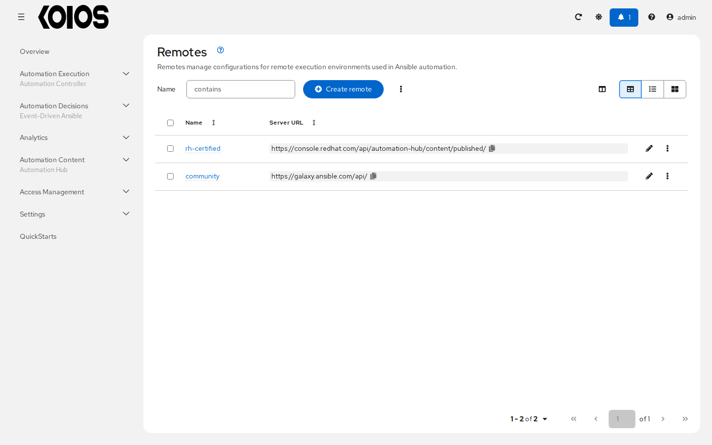
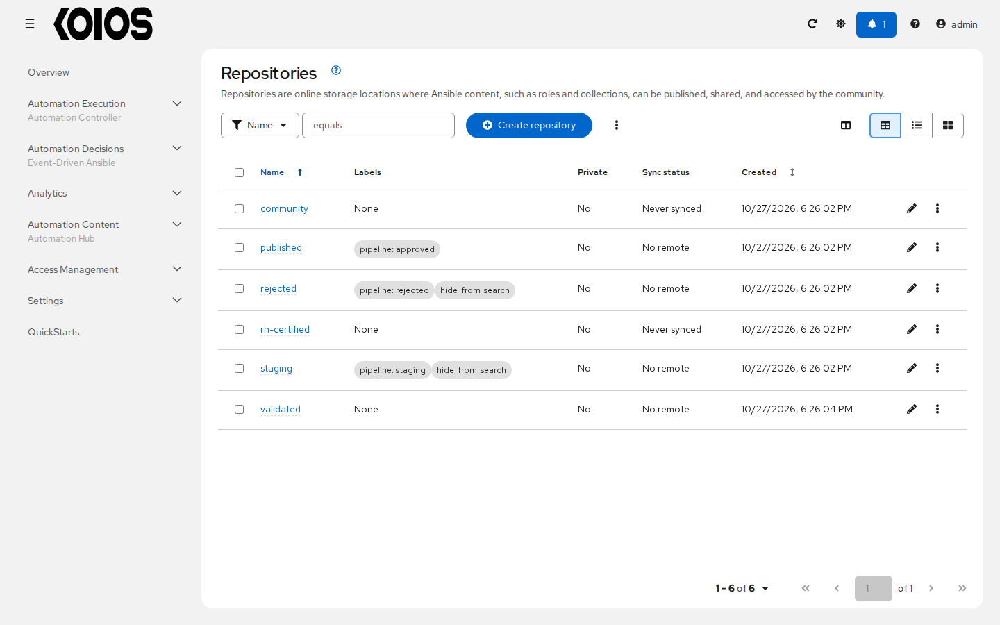
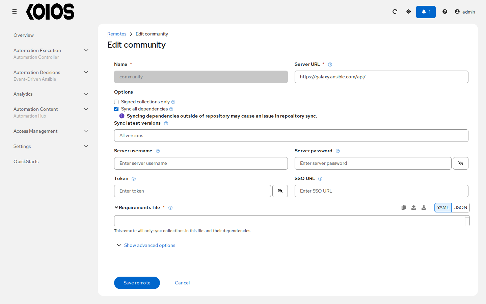
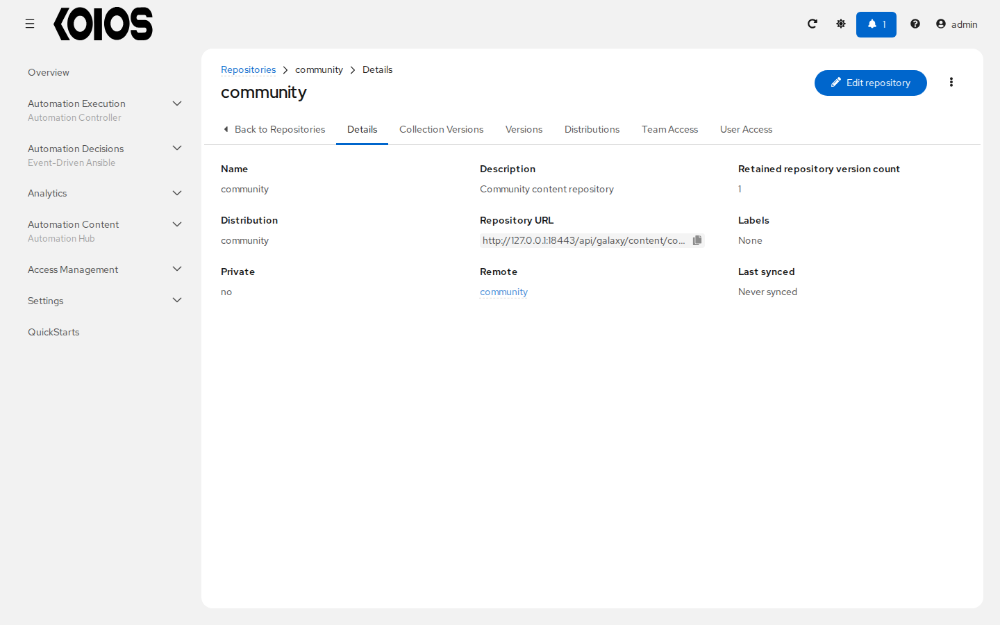

Remotes and repositories
A local collection upload and a remote synchronization are different workflows. Uploads enter the local approval pipeline. A remote supplies connection settings for fetching content from another server; a repository holds the synchronized content and a distribution exposes it to clients.
The documentation test platform has community and rh-certified remotes and repositories named published, staging, rejected, validated, community and rh-certified. These names describe the observed setup; inspect your own deployment before changing it.
Note
Synchronization of collections from a remote has not been validated for this documentation. The earlier hub evidence validates local publish/install and synchronization of platform users and teams, not remote collection synchronization. The procedure below describes the UI/source contract and needs a controlled runtime test before it is used as a production runbook.
Inspect the resources
Open Automation Content > Remotes to inspect upstream connection settings, authentication, certificate options and the requirements file.
Open Automation Content > Repositories to inspect local content, the assigned Remote, Pipeline, permissions and Distributions.
Open Automation Content > Task Management for asynchronous task results. An accepted sync request is not proof that the content was downloaded successfully.
A remote with a valid URL is not a repository, and a repository with a name is not automatically accessible at the similarly named public URL. Check its distribution rather than guessing the client endpoint.


Restrict the community remote
A community remote can synchronize content from Ansible Galaxy. Avoid an unrestricted mirror of all available collections: that can consume substantial storage and download time.
In Automation Content > Remotes, open community and use Edit remote.
Review its upstream URL and authentication. Do not use the platform hub’s own URL as the external community source.
In Requirements file, enter a small selection of collections and, where appropriate, pin their versions. The field contains the contents of a requirements YAML file, not a local path.
Click Save remote. Saving the remote does not perform a synchronization.
For example:
collections:
- name: ansible.posix
version: "2.0.0"
This is an illustrative selection, not a version downloaded or validated during the hub tutorial. Choose a release compatible with your Ansible environment and available from your upstream server. The remote includes the listed collections and their dependencies, so the selection does not necessarily produce just one artifact. The UI requires Requirements file for a community remote; for other remotes, leaving it empty can request all content offered by that server.

Certified and other upstream sources
The rh-certified remote refers to content from a Red Hat service. The remote’s name does not
grant access to that service or certify Koios Automation Platform. Configure only an upstream
endpoint and credentials that your organization is entitled to use. Registry credentials for
ghcr.io/koiosplatform, gateway API tokens and upstream service credentials are different grants.
Other remotes can use an upstream server’s supported authentication and CA configuration. Keep certificate validation enabled and supply the required trust for a private CA. Do not copy secrets from a remote’s configuration into a public issue or screenshot.
Connect a repository and synchronize
This workflow is not validated on the Koios test platform:
In Automation Content > Repositories, inspect the intended destination and choose Edit repository if a change is needed. Its Remote must be the one you intend to use.
Check Distributions to establish which client URL exposes the destination. Also review Pipeline: not every repository follows the local staging-to-published approval workflow.
Set the remote’s requirements and confirm the intended scope before starting. Prefer an isolated test repository for initial validation, rather than changing a production published repository’s content source.
Choose Sync repository. Review the synchronization options and confirm with Sync. Inspect the task reached from the resulting notification or Task Management.
After successful task completion, inspect the actual collection versions in the destination. Test a client installation from its distribution URL in a fresh collection path.
Review synchronization settings before accepting them: mirroring can remove destination content that is absent upstream. A completed task is only one check; verify the selected versions, dependencies, distribution URL and client permissions before exposing synchronized content to jobs.

Keep repository scope explicit
Repository or distribution |
What consumers should infer |
|---|---|
staging |
An imported local upload awaits approval in the configured pipeline. It is not automatically in the published distribution. |
published |
The local approval pipeline’s consumer destination. Use its documented distribution URL for installations. |
rejected |
Review rejected that version; it is not approved for published consumers. |
validated |
A separate content set. The name alone says nothing about a particular version’s test evidence, signatures or installation permissions. |
community / rh-certified |
Content sources/sets associated with upstream synchronization. Do not assume local upload approvals or service entitlements apply identically. |
For the local upload walkthrough, use
https://<platform>/api/galaxy/content/published/. For another repository, read its distribution
configuration rather than substituting its name into that URL and assuming it exists.
Grant only the permissions required
Manage users and teams in the platform’s Access Management, and grant hub access on the relevant resources. Separate content authors, reviewers and consumers where possible.
Task |
Required capabilities |
|---|---|
Create a namespace |
Permission to create namespaces, not merely membership of a platform organization. |
Upload a collection |
Upload permission on the collection’s namespace and permission to add content to the selected destination under its pipeline rules. |
Approve or move versions |
Permission to modify the relevant repositories’ content. Namespace upload permission alone is not an approval role. |
Configure remotes |
View/change permission on the relevant remote, including authority to manage its authentication settings. |
Synchronize |
Permission to synchronize the remote/repository and modify the destination content. |
Install |
Read/download access to the distribution/repository and its content. An API token cannot grant more access than its user has. |
The backend distinguishes namespace upload permission (galaxy.upload_to_namespace) from
repository-content modification (ansible.modify_ansible_repo_content). Use the permissions and
resource access controls provided by your release; do not grant platform superuser access just to
make a missing action appear. If an operation returns 403, inspect the resource scope and token
scope before changing roles.